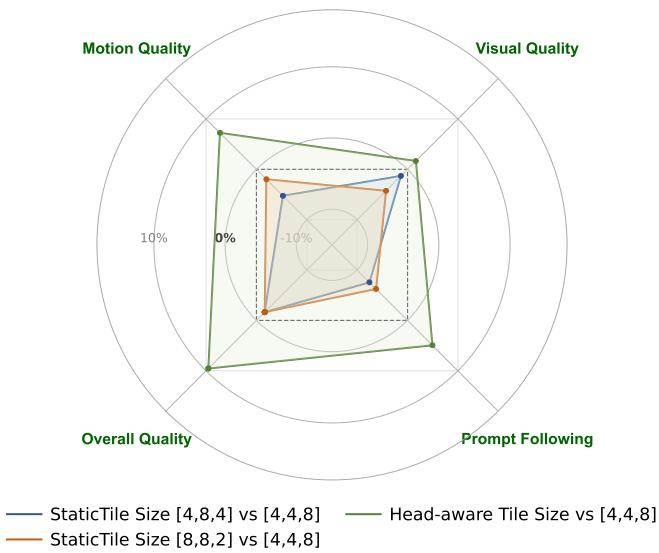

Figureure 2 · Architectural comparison of sparse attention methodsFigure 2. Architectural comparison of sparse attention methods. We compare the proposed Veda (ours) with representative methods that use (i) static sparse patterns (SVG (Xi et al., 2025)) and (ii) dynamically learned sparse masks (VSA (Zhang et al., 2025b)). Solid lines indicate the inference data flow, while dashed lines denote auxiliary components used only during training.这张图/表用于判断 Veda 的实验收益来自哪里。重点看替换、消融或跨模型设置下趋势是否一致，而不是只看单个最高分。

Figureure 10 · Human evaluation of dynamic versus static tile size configurationsFigure 10. Human evaluation of dynamic versus static tile size configurations. We benchmark various static tile size settings alongside our proposed Head-aware dynamic selection method against the strongest static baseline ([4, 4, 8]). While the [4, 4, 8] configuration emerges as the optimal fixed setting, our dynamic approach consistently outperforms all static alternatives, achieving positive net win rates across evaluations and demonstrating superior generation quality through adaptive tile size allocation.这张图来自论文 PDF 的结构化抽取。当前用于辅助理解 Veda 的方法或实验，请结合正文精读段落一起看。